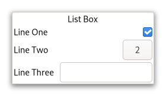

Gtk.ListBox¶
Example¶
- Subclasses
None
Methods¶
- Inherited
Gtk.Widget (181), GObject.Object (37), Gtk.Accessible (15), Gtk.Buildable (1)
- Structs
class |
|
|
|
|
|
|
|
|
|
|
|
|
|
|
|
|
|
|
|
|
|
|
|
|
|
|
|
|
|
|
|
|
|
|
|
|
|
|
|
|
|
|
|
|
Virtual Methods¶
Properties¶
- Inherited
Name |
Type |
Flags |
Short Description |
|---|---|---|---|
r/w/en |
|||
r/w/en |
|||
r/w/en |
|||
r/w/en |
Signals¶
- Inherited
Name |
Short Description |
|---|---|
Emitted when a row has been activated by the user. |
|
Emitted when a new row is selected, or (with a |
|
Emitted to select all children of the box, if the selection mode permits it. |
|
Emitted when the set of selected rows changes. |
|
Emitted to unselect all children of the box, if the selection mode permits it. |
Fields¶
- Inherited
Class Details¶
- class Gtk.ListBox(**kwargs)¶
- Bases
- Abstract
No
GtkListBoxis a vertical list.A
GtkListBoxonly containsGtkListBoxRowchildren. These rows can by dynamically sorted and filtered, and headers can be added dynamically depending on the row content. It also allows keyboard and mouse navigation and selection like a typical list.Using
GtkListBoxis often an alternative toGtkTreeView, especially when the list contents has a more complicated layout than what is allowed by aGtkCellRenderer, or when the contents is interactive (i.e. has a button in it).Although a
GtkListBoxmust have onlyGtkListBoxRowchildren, you can add any kind of widget to it via [method`Gtk`.ListBox.prepend], [method`Gtk`.ListBox.append] and [method`Gtk`.ListBox.insert] and aGtkListBoxRowwidget will automatically be inserted between the list and the widget.GtkListBoxRowscan be marked as activatable or selectable. If a row is activatable, [signal`Gtk`.ListBox::row-activated] will be emitted for it when the user tries to activate it. If it is selectable, the row will be marked as selected when the user tries to select it.The
GtkListBoximplementation of theGtkBuildableinterface supports setting a child as the placeholder by specifying “placeholder” as the “type” attribute of a<child>element. See [method`Gtk`.ListBox.set_placeholder] for info.- CSS nodes
list[.separators][.rich-list][.navigation-sidebar][.boxed-list] ╰── row[.activatable]
GtkListBoxuses a single CSS node named list. It may carry the .separators style class, when the [property`Gtk`.ListBox:show-separators] property is set. EachGtkListBoxRowuses a single CSS node named row. The row nodes get the .activatable style class added when appropriate.It may also carry the .boxed-list style class. In this case, the list will be automatically surrounded by a frame and have separators.
The main list node may also carry style classes to select the style of list presentation : .rich-list, .navigation-sidebar or .data-table.
- Accessibility
GtkListBoxuses theGtk.AccessibleRole.LISTrole andGtkListBoxRowuses theGtk.AccessibleRole.LIST_ITEMrole.- append(child)[source]¶
- Parameters
child (
Gtk.Widget) – theGtkWidgetto add
Append a widget to the list.
If a sort function is set, the widget will actually be inserted at the calculated position.
- bind_model(model, create_widget_func, *user_data)[source]¶
- Parameters
model (
Gio.ListModelorNone) – theGListModelto be bound to selfcreate_widget_func (
Gtk.ListBoxCreateWidgetFuncorNone) – a function that creates widgets for items orNonein case you also passedNoneas modeluser_data (
objectorNone) – user data passed to create_widget_func
Binds model to self.
If self was already bound to a model, that previous binding is destroyed.
The contents of self are cleared and then filled with widgets that represent items from model. self is updated whenever model changes. If model is
None, self is left empty.It is undefined to add or remove widgets directly (for example, with [method`Gtk`.ListBox.insert]) while self is bound to a model.
Note that using a model is incompatible with the filtering and sorting functionality in
GtkListBox. When using a model, filtering and sorting should be implemented by the model.
- drag_highlight_row(row)[source]¶
- Parameters
row (
Gtk.ListBoxRow) – aGtkListBoxRow
Add a drag highlight to a row.
This is a helper function for implementing DnD onto a
GtkListBox. The passed in row will be highlighted by setting theGtk.StateFlags.DROP_ACTIVEstate and any previously highlighted row will be unhighlighted.The row will also be unhighlighted when the widget gets a drag leave event.
- drag_unhighlight_row()[source]¶
If a row has previously been highlighted via
Gtk.ListBox.drag_highlight_row(), it will have the highlight removed.
- get_adjustment()[source]¶
- Returns
the adjustment
- Return type
Gets the adjustment (if any) that the widget uses to for vertical scrolling.
- get_row_at_index(index_)[source]¶
- Parameters
index (
int) – the index of the row- Returns
the child
GtkWidget- Return type
Gets the n-th child in the list (not counting headers).
If index_ is negative or larger than the number of items in the list,
Noneis returned.
- get_row_at_y(y)[source]¶
- Parameters
y (
int) – position- Returns
the row
- Return type
Gets the row at the y position.
- get_selected_row()[source]¶
- Returns
the selected row
- Return type
Gets the selected row, or
Noneif no rows are selected.Note that the box may allow multiple selection, in which case you should use [method`Gtk`.ListBox.selected_foreach] to find all selected rows.
- get_selected_rows()[source]¶
- Returns
A
GListcontaining theGtkWidgetfor each selected child. Free with g_list_free() when done.- Return type
Creates a list of all selected children.
- get_selection_mode()[source]¶
- Returns
a
GtkSelectionMode- Return type
Gets the selection mode of the listbox.
- insert(child, position)[source]¶
- Parameters
child (
Gtk.Widget) – theGtkWidgetto addposition (
int) – the position to insert child in
Insert the child into the self at position.
If a sort function is set, the widget will actually be inserted at the calculated position.
If position is -1, or larger than the total number of items in the self, then the child will be appended to the end.
- invalidate_filter()[source]¶
Update the filtering for all rows.
Call this when result of the filter function on the self is changed due to an external factor. For instance, this would be used if the filter function just looked for a specific search string and the entry with the search string has changed.
- invalidate_headers()[source]¶
Update the separators for all rows.
Call this when result of the header function on the self is changed due to an external factor.
- invalidate_sort()[source]¶
Update the sorting for all rows.
Call this when result of the sort function on the self is changed due to an external factor.
- prepend(child)[source]¶
- Parameters
child (
Gtk.Widget) – theGtkWidgetto add
Prepend a widget to the list.
If a sort function is set, the widget will actually be inserted at the calculated position.
- remove(child)[source]¶
- Parameters
child (
Gtk.Widget) – the child to remove
Removes a child from self.
- remove_all()[source]¶
Removes all rows from self.
This function does nothing if self is backed by a model.
New in version 4.12.
- select_row(row)[source]¶
- Parameters
row (
Gtk.ListBoxRoworNone) – The row to select
Make row the currently selected row.
- selected_foreach(func, *data)[source]¶
- Parameters
func (
Gtk.ListBoxForeachFunc) – the function to call for each selected child
Calls a function for each selected child.
Note that the selection cannot be modified from within this function.
- set_activate_on_single_click(single)[source]¶
- Parameters
single (
bool) – a boolean
If single is
True, rows will be activated when you click on them, otherwise you need to double-click.
- set_adjustment(adjustment)[source]¶
- Parameters
adjustment (
Gtk.AdjustmentorNone) – the adjustment
Sets the adjustment (if any) that the widget uses to for vertical scrolling.
For instance, this is used to get the page size for PageUp/Down key handling.
In the normal case when the self is packed inside a
GtkScrolledWindowthe adjustment from that will be picked up automatically, so there is no need to manually do that.
- set_filter_func(filter_func, *user_data)[source]¶
- Parameters
filter_func (
Gtk.ListBoxFilterFuncorNone) – callback that lets you filter which rows to showuser_data (
objectorNone) – user data passed to filter_func
By setting a filter function on the self one can decide dynamically which of the rows to show.
For instance, to implement a search function on a list that filters the original list to only show the matching rows.
The filter_func will be called for each row after the call, and it will continue to be called each time a row changes (via [method`Gtk`.ListBoxRow.changed]) or when [method`Gtk`.ListBox.invalidate_filter] is called.
Note that using a filter function is incompatible with using a model (see [method`Gtk`.ListBox.bind_model]).
- set_header_func(update_header, *user_data)[source]¶
- Parameters
update_header (
Gtk.ListBoxUpdateHeaderFuncorNone) – callback that lets you add row headersuser_data (
objectorNone) – user data passed to update_header
Sets a header function.
By setting a header function on the self one can dynamically add headers in front of rows, depending on the contents of the row and its position in the list.
For instance, one could use it to add headers in front of the first item of a new kind, in a list sorted by the kind.
The update_header can look at the current header widget using [method`Gtk`.ListBoxRow.get_header] and either update the state of the widget as needed, or set a new one using [method`Gtk`.ListBoxRow.set_header]. If no header is needed, set the header to
None.Note that you may get many calls update_header to this for a particular row when e.g. changing things that don’t affect the header. In this case it is important for performance to not blindly replace an existing header with an identical one.
The update_header function will be called for each row after the call, and it will continue to be called each time a row changes (via [method`Gtk`.ListBoxRow.changed]) and when the row before changes (either by [method`Gtk`.ListBoxRow.changed] on the previous row, or when the previous row becomes a different row). It is also called for all rows when [method`Gtk`.ListBox.invalidate_headers] is called.
- set_placeholder(placeholder)[source]¶
- Parameters
placeholder (
Gtk.WidgetorNone) – aGtkWidget
Sets the placeholder widget that is shown in the list when it doesn’t display any visible children.
- set_selection_mode(mode)[source]¶
- Parameters
mode (
Gtk.SelectionMode) – TheGtkSelectionMode
Sets how selection works in the listbox.
- set_show_separators(show_separators)[source]¶
-
Sets whether the list box should show separators between rows.
- set_sort_func(sort_func, *user_data)[source]¶
- Parameters
sort_func (
Gtk.ListBoxSortFuncorNone) – the sort function
Sets a sort function.
By setting a sort function on the self one can dynamically reorder the rows of the list, based on the contents of the rows.
The sort_func will be called for each row after the call, and will continue to be called each time a row changes (via [method`Gtk`.ListBoxRow.changed]) and when [method`Gtk`.ListBox.invalidate_sort] is called.
Note that using a sort function is incompatible with using a model (see [method`Gtk`.ListBox.bind_model]).
- unselect_row(row)[source]¶
- Parameters
row (
Gtk.ListBoxRow) – the row to unselect
Unselects a single row of self, if the selection mode allows it.
Signal Details¶
- Gtk.ListBox.signals.activate_cursor_row(list_box)¶
- Signal Name
activate-cursor-row- Flags
- Parameters
list_box (
Gtk.ListBox) – The object which received the signal
- Gtk.ListBox.signals.move_cursor(list_box, object, p0, p1, p2)¶
- Signal Name
move-cursor- Flags
- Parameters
list_box (
Gtk.ListBox) – The object which received the signalobject (
Gtk.MovementStep) –p0 (
int) –p1 (
bool) –p2 (
bool) –
- Gtk.ListBox.signals.row_activated(list_box, row)¶
- Signal Name
row-activated- Flags
- Parameters
list_box (
Gtk.ListBox) – The object which received the signalrow (
Gtk.ListBoxRow) – the activated row
Emitted when a row has been activated by the user.
- Gtk.ListBox.signals.row_selected(list_box, row)¶
- Signal Name
row-selected- Flags
- Parameters
list_box (
Gtk.ListBox) – The object which received the signalrow (
Gtk.ListBoxRoworNone) – the selected row
Emitted when a new row is selected, or (with a
Nonerow) when the selection is cleared.When the box is using
Gtk.SelectionMode.MULTIPLE, this signal will not give you the full picture of selection changes, and you should use the [signal`Gtk`.ListBox::selected-rows-changed] signal instead.
- Gtk.ListBox.signals.select_all(list_box)¶
- Signal Name
select-all- Flags
- Parameters
list_box (
Gtk.ListBox) – The object which received the signal
Emitted to select all children of the box, if the selection mode permits it.
This is a keybinding signal.
The default binding for this signal is <kbd>Ctrl</kbd>-<kbd>a</kbd>.
- Gtk.ListBox.signals.selected_rows_changed(list_box)¶
- Signal Name
selected-rows-changed- Flags
- Parameters
list_box (
Gtk.ListBox) – The object which received the signal
Emitted when the set of selected rows changes.
- Gtk.ListBox.signals.toggle_cursor_row(list_box)¶
- Signal Name
toggle-cursor-row- Flags
- Parameters
list_box (
Gtk.ListBox) – The object which received the signal
- Gtk.ListBox.signals.unselect_all(list_box)¶
- Signal Name
unselect-all- Flags
- Parameters
list_box (
Gtk.ListBox) – The object which received the signal
Emitted to unselect all children of the box, if the selection mode permits it.
This is a keybinding signal.
The default binding for this signal is <kbd>Ctrl</kbd>-<kbd>Shift</kbd>-<kbd>a</kbd>.
Property Details¶
- Gtk.ListBox.props.accept_unpaired_release¶
- Name
accept-unpaired-release- Type
- Default Value
- Flags
Whether to accept unpaired release events.
- Gtk.ListBox.props.activate_on_single_click¶
- Name
activate-on-single-click- Type
- Default Value
- Flags
Determines whether children can be activated with a single click, or require a double-click.
- Gtk.ListBox.props.selection_mode¶
- Name
selection-mode- Type
- Default Value
- Flags
The selection mode used by the list box.